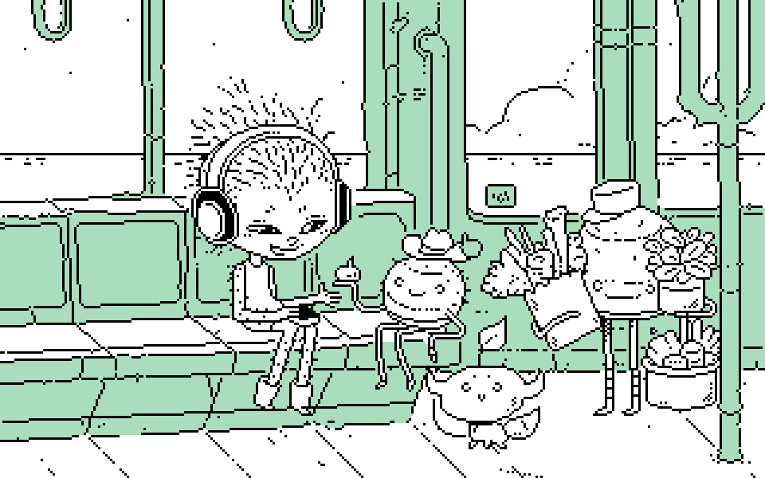

About
About Projects
Projects Games
Games Stories
Stories Store
Store Hobby
Hobby Notes
Notes How-to
How-to
Take a seat aboard the Lepore Express, listen to a bit of music, talk to some people, play games, look outside, kickback.
Lepore Express Line is devine and I's humble submission to Catjam 2026, the game features a ton of cameos from all our other projects, maybe you can recognize a few. It's written in Uxntal, a concatenative assembly language for a 16-bit ordinator. Have a look at the source. Play Lepore Express LineThe game is an homage to all of the worlds we've created over the years. Character features include:
- Cactus Girl from spines and pincers
- polycat
- yufo
- Lupen from wiktopher
- Kaddali from hakum
- The Nastazie Wizard from oquonie
- shiba killy from mindbird
- Arkady from rabbit waves
- A vambit (see drownspire)
- The teapot from paradise
- Bat, Cat, Fox and Owl from thousand rooms
- uxn
- Varvara
- Potato
- The Uxn Sunflower from Sunflower Basic
- Gyo
- Bombafu and the tote bag Merganser from tote
- The Gull Syndicate from no bears none
- Adépen from Adelie
- Ni from niju
- Brrn Brrns from catpot
- Little Ninj